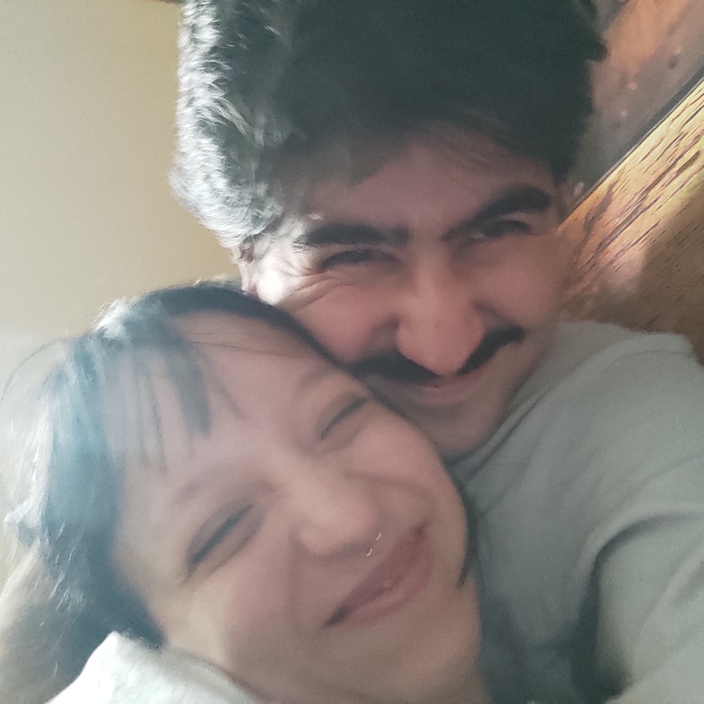

ÖNCELİKLE
bu bizim ilk sevgililer günümüz
cok güzeliz cicek gibi bahar gibi
iliskimz baharda başladı diye mi
bilmiyorum
mevsim olsa bahar olurdu
yeri gelince yağmurlu
yeri gelince güneşli
ama hep tatlı bi rüzgar eser
hep tatlıdır havası
bazen polen alerji yapsa da
senleyken o da keyifli
küçük ama sana böyle bir hediyem olsun istedim
(cok minik kod yazmayı ogrendim :3)
En çok kullandığımız cümle?
İlk öptüğün yer?
Aşk hayvanımız?
En çok yediğimiz 3 yemek?
Seni en çok öptüğüm yer?(beylerbeyi hariiiccc)
Devam etmek ister misin?
tıkla bakalım tontonum
Bazen düşünüyorum da… Ben seni ararken bulmadım. Demeyeceğim baya aradım iki yıl KLHEAFIOHAIPFH Ama hayatın cilvesidir belki; seni, hayatın tam ortasında, ben yorulmuşken buldum. Sanki sonsuz zamandır birlikteymisiz gibiydi. Yanındayken içimde garip bir sessizlik oluyor. Hani her şey yoluna girmiş gibi…Kafam daha temiz Kalbim ilk kez acele etmiyor. Elini tuttuğumda dünya durmuyor belki ama ben durabiliyorum. Ve bu bana çok iyi geliyor. Seni sevmek hem haykırmak benim için Hem de içten içe yayılan bir sıcaklık. Filler dans ederken aynı zamanda çiçekte açıyor Güneş vururken rüzgar da esiyor Sen varken hiçbir şey eksik hissettirmiyor. En çok da şuna şaşırıyorum: Benim karmaşık hâllerimi olduğu gibi seviyorsun. Suskunluğumu da, coşkumu da aynı yerden tutuyorsun. Kimseye açamadığım taraflarım, senin yanında kendiliğinden açılıyor. Bu çok kıymetli. Çok özel. Bu… bulunmuşluk hissi. Ben seninle güçlü hissediyorum Efe. Korkularım var elbet insanım ama yalnız değilim. Yanımda duruşun, her zaman buradayım deyişin bana dünyadaki en güvenli yere dönüşüyor. Bu Sevgililer Günü’nde sana şunu söylemek istiyorum: Ben seni seviyorum. Sessizce (bazen sesli), derinden (yüzeysel bile), uzun uzun (kısa olarakta). Ve iyi ki kalbim seni seçmiş. İyi ki varsın. İyi ki “biz” diye bir şey var. Seni seviyorum.
aşağı kaydır 👇